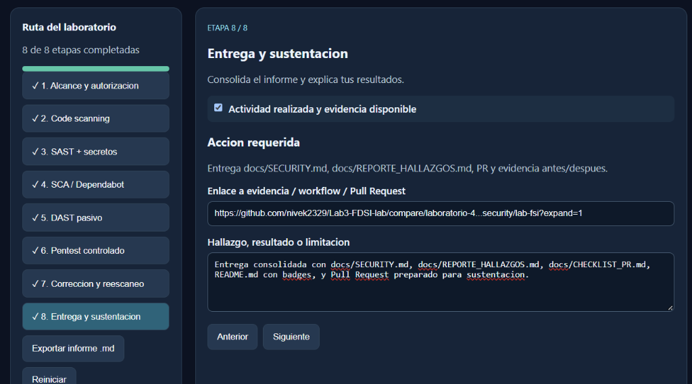
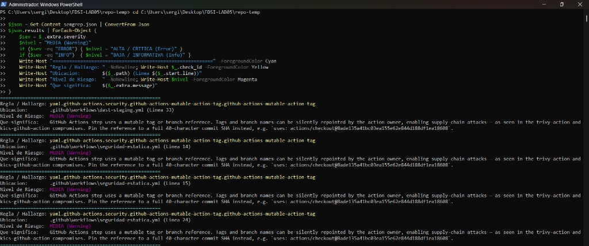
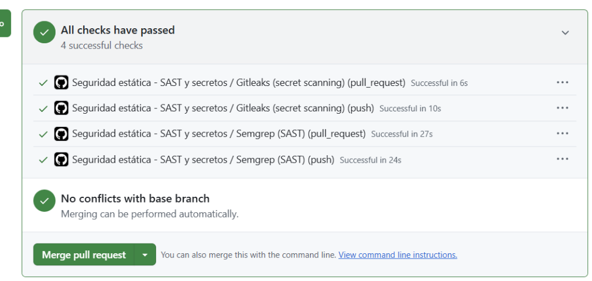
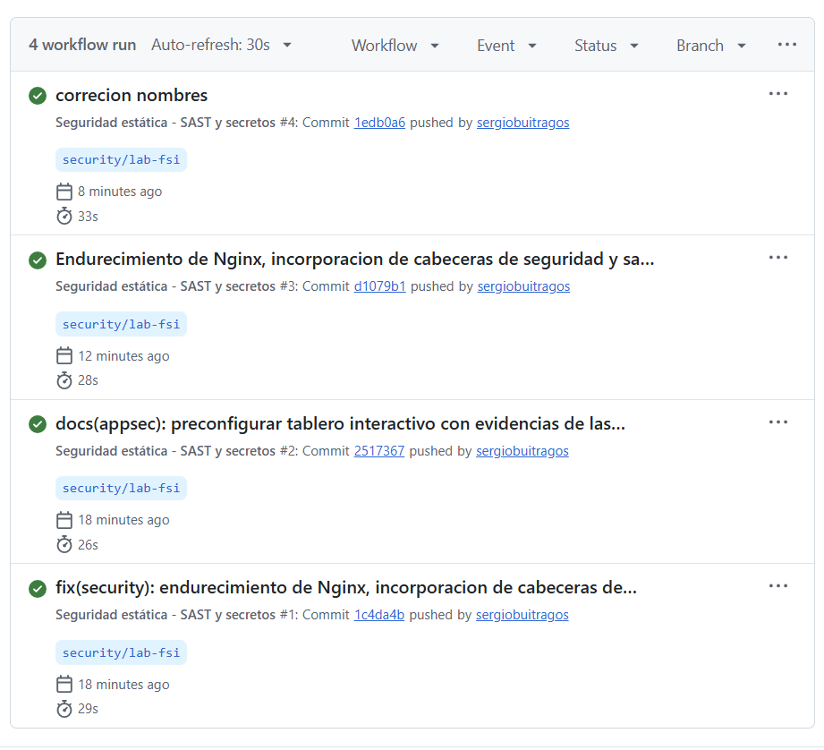

NetOps Secure Execution Portal
Auditing, vulnerability identification, and proactive remediation using automated CI/CD pipelines, static analysis, dynamic testing, and defense-in-depth web server hardening.
Group G06 Presenters:
👤 Kevin Andrey Ángel Acevedo (Blue Team)
👤 Sergio Daniel Buitrago Suancha (Red Team)
👤 Daniel Julian Peña Bonilla (Red Team)

Figure 1: DevSecOps 8-Stage Interactive Control Board
Status: All 8 Stages Passed
Person 1
"Good morning everyone. Today we are presenting our security testing, technical evidence, and remediations for Lab 5 on our NetOps portal."
| ID |
Vulnerability & Risk Description |
OWASP / CWE |
Severity |
Affected Component |
Initial State |
Remediated State |
| F-01 |
Missing HTTP Security Headers (Clickjacking) |
A05:2021
CWE-1021 |
MEDIUM |
nginx/netops-portal.conf |
Vulnerable (Framable in iframe) |
FIXED (X-Frame-Options: DENY) |
| F-02 |
Server Version & OS Information Disclosure |
A05:2021
CWE-200 |
LOW |
nginx/netops-portal.conf |
Vulnerable (nginx/1.24.0 leaked) |
FIXED (server_tokens off) |
| F-03 |
DOM-based Cross-Site Scripting (DOM XSS) |
A03:2021
CWE-79 |
MEDIUM |
app/audit-log.html |
Vulnerable (Unescaped DOM write) |
FIXED (escapeHTML sanitization) |
| F-04 |
Mutable Tags in GitHub Actions (Supply Chain) |
A06:2021
CWE-829 |
MEDIUM |
.github/workflows/*.yml |
6 Warnings (@v4, @v5 mutable tags) |
FIXED (Pinned to SHA-40 hashes) |
Person 1
"We categorized our findings into 4 classes: Clickjacking due to missing headers, server version disclosure, DOM XSS in logs, and supply chain risks in our GitHub Actions."
1. Static Analysis (Semgrep SAST)
Automated in seguridad-estatica.yml. It generated semgrep.json flagging 6 supply chain warnings (use of mutable tags in CI/CD).
$json.results | ForEach-Object {
Rule: github-actions-mutable-action-tag
Severity: WARNING (Medium)
File: .github/workflows/seguridad-estatica.yml
}
2. Secret Detection (Gitleaks)
Full repository scan with fetch-depth: 0. Result: 0 secrets, tokens, or credentials exposed in git history.

Figure 2: PowerShell inspection of semgrep.json
6 Warnings Detected (Before)
Person 1
"We ran Semgrep inside GitHub Actions and parsed the output in PowerShell, discovering 6 warnings. Meanwhile, Gitleaks verified that our repository was clean of leaked secrets."
1. Dynamic Analysis (OWASP ZAP)
Automated in dast-staging.yml using official Docker container zaproxy/zap-stable against local staging (http://localhost:8080).
- Alert 1: Content-Security-Policy (CSP) Header Not Set.
- Alert 2: Missing Anti-clickjacking Header (X-Frame-Options).
- Alert 3: Server Leaks Version Information via "Server" HTTP header.
2. Authorized Pentesting (PoC)
Clickjacking Proof of Concept:
Created an attacker test page with: <iframe src="http://localhost:8080/"></iframe>.
Observed Result: The entire portal rendered inside the frame without restriction.
$ curl -I http://localhost:8080/
HTTP/1.1 200 OK
Server: nginx/1.24.0 (Ubuntu) ← Leaked!
(Missing X-Frame-Options, CSP, HSTS)
Person 1
"Using OWASP ZAP and manual curl requests, we proved the server had no anti-clickjacking headers and leaked its exact Nginx and Ubuntu version."
1. Nginx Hardening (Server Level)
server {
server_tokens off; # Hides version
add_header X-Frame-Options "DENY" always;
add_header X-Content-Type-Options "nosniff" always;
add_header Content-Security-Policy "default-src 'self'..." always;
add_header Strict-Transport-Security "max-age=31536000" always;
}
2. DOM XSS Neutralization (Frontend)
function escapeHTML(str) {
return String(str).replace(/[&<>"']/g, c => ({'<':'<','>':'>','&':'&'}[c]));
}
3. Supply Chain Mitigation (SHA-40 Hashes)
We replaced floating tags with immutable commit SHAs in workflows:
# BEFORE (Mutable - Vulnerable):
uses: actions/checkout@v4
uses: actions/setup-python@v5
# AFTER (Pinned - Secure):
uses: actions/checkout@b4ffde65f46336ab88eb53be808477a3936bae11
uses: actions/setup-python@0a5c61591373683505ea898e09a3ea4f39ef2b9c
Person 2
"We remediated all findings: we configured Nginx security headers and disabled server tokens, implemented escapeHTML in frontend, and pinned all GitHub Actions to immutable SHA hashes."
Regression Testing Evidence
$ curl -I http://localhost:8080/
HTTP/1.1 200 OK
Server: nginx ← Version & OS hidden!
X-Frame-Options: DENY
X-Content-Type-Options: nosniff
Content-Security-Policy: default-src 'self'...
Strict-Transport-Security: max-age=31536000...
Browser PoC Retest:
Attacker iframe re-attempt now produces:
Refused to display in a frame because it set 'X-Frame-Options' to 'deny'.

Figure 3: Pull Request #1 — All Checks Passed in Green
Semgrep, Gitleaks, DAST ZAP
Person 2
"We validated the fixes: the browser now strictly blocks the iframe, curl shows headers are clean, and our Pull Request #1 passed all automated checks with 100% green status."

Figure 4: Workflows Execution Log in GitHub Actions
0 Vulnerabilities Active
1. Shift-Left Security Culture
Integrating automated security gates (SAST + Secrets) into PRs prevents misconfigurations before reaching production environments.
2. Complementary Value of DAST
Dynamic scanning caught runtime misconfigurations (like missing HTTP headers) that static source code analysis could not detect.
Repository URL:
https://github.com/nivek2329/Lab3-FDSI-lab
Person 2
"In conclusion, shifting security left into our CI/CD pipeline and applying defense-in-depth ensures a safer development lifecycle. Thank you very much, any questions?"